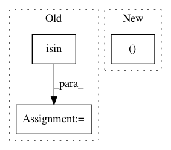

6ddfab1ac6105dddabc8463866f988645ed0d9c4,tmtoolkit/preprocess/_preprocworker.py,PreprocWorker,_task_filter_for_pos,#PreprocWorker#Any#Any#Any#Any#,309
Before Change
else:
simplify_fn = np.vectorize(lambda x: x) // identity function
matches = [np.isin(simplify_fn(dmeta["meta_pos"]), required_pos) if len(dmeta["meta_pos"]) > 0
else np.array([], dtype=bool)
for dt, dmeta in zip(self._tokens, self._tokens_meta)]
self._apply_matches_array(matches, invert=inverse)
def _apply_matches_array(self, matches, invert=False):
After Change
inverse=inverse)
def _task_filter_for_pos(self, required_pos, pos_tagset, simplify_pos, inverse):
self._tokens, self._tokens_meta = filter_for_pos(self._tokens, self._tokens_meta,
required_pos=required_pos,
tagset=pos_tagset,
simplify_pos=simplify_pos,
In pattern: SUPERPATTERN
Frequency: 4
Non-data size: 3
Instances
Project Name: WZBSocialScienceCenter/tmtoolkit
Commit Name: 6ddfab1ac6105dddabc8463866f988645ed0d9c4
Time: 2019-07-26
Author: markus.konrad@wzb.eu
File Name: tmtoolkit/preprocess/_preprocworker.py
Class Name: PreprocWorker
Method Name: _task_filter_for_pos
Project Name: etal/cnvkit
Commit Name: c264a73e401d5d030ee7ca510e2db7004418b469
Time: 2017-09-15
Author: eric.talevich@gmail.com
File Name: scripts/cn_ztest.py
Class Name:
Method Name:
Project Name: rusty1s/pytorch_geometric
Commit Name: 307e94868750f515472c3bc7e5d6cbfd51b5eff6
Time: 2019-08-15
Author: matthias.fey@tu-dortmund.de
File Name: test/utils/test_negative_sampling.py
Class Name:
Method Name: test_negative_sampling
Project Name: etal/cnvkit
Commit Name: 0c1fa4c336e09956e5ca82081c1afbd8807b778d
Time: 2017-03-03
Author: eric.talevich@gmail.com
File Name: cnvlib/autobin.py
Class Name:
Method Name: hybrid